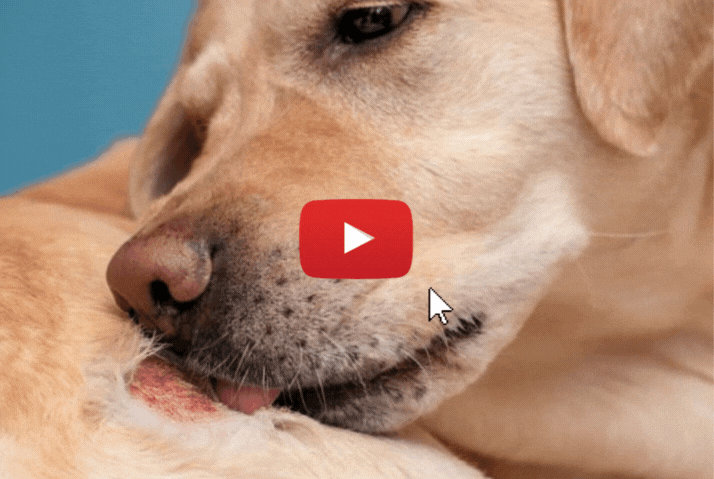

Pet Health Crisis for Dogs!
Tierarzt deckt 3 “Gesundheitszerstörer” auf, die Ihrem Hund das Leben kosten können (97 % der Hundebesitzer wissen das nicht)
Warum steigen die Krebsraten bei Hunden so schnell? Und warum hat sich die Lebenserwartung einiger Rassen in den letzten 20 Jahren sogar halbiert?
Gibt es etwas, das man Ihnen nicht sagt?
Einem der besten Tierärzte Europas zufolge... JA!
Nachdem er in seiner Klinik in Liverpool mehr als 16.470 Hunden geholfen hat, hat Dr. Matej Zupanc eine dringende Botschaft für alle Hundebesitzer:
“Es ist eine Tragödie. Die Gesundheit von Hunden ist derzeit auf einem historischen Tiefpunkt... und mehr als 50 % aller Hunde über 10 Jahren bekommen Krebs.” verriet Dr. Zupanc. “Und das alles wegen dieser '3 Gesundheits-Killer für Hunde'.”
Aber nach 21 Jahren Erfahrung...
und nach der Behandlung aller möglichen Hundekrankheiten...
hat Dr. Zupanc endlich eine Lösung gefunden:
“Jeder Hund verdient es, ein gesundes, langes und glückliches Leben zu führen. Und nach 3 Jahren Forschung haben wir EINE Sache gefunden, die Sie tun können, um die Gesundheit Ihres Hundes zu fördern und seine Lebensspanne um JAHRE zu verlängern. ”
“Es ist ganz einfach. Sie können es sofort von Ihrer Küche aus tun, und es dauert nur 20 Sekunden.”
Und jetzt, zum ersten Mal überhaupt...
Dr. Zupanc hat ein kurzes, kostenloses Video erstellt, in dem er die 3 “Hundekiller” aufdeckt, die für Hunde tödlich sein können... und seine neue 20-sekündige “Hunde Kur” , mit der Sie die Lebensdauer Ihres Hundes um JAHRE verlängern können (mit Schritt-für-Schritt-Anleitung, wie es geht).
>> Klicken Sie hier, um das kostenlose Video abzuspielen.
Skeptisch? Wir waren es auch.
Aber nachdem wir die Ratschläge von Dr. Zupanc gesehen hatten, waren wir so beeindruckt, dass wir beschlossen, sein Video heute mit unseren Lesern zu teilen.
Das Video verbreitet sich inzwischen viral, mit über 237.480 Aufrufen.
Und die Kommentare sind unglaublich! Eine Frau aus München sagte sogar:
“Ich bin so froh, dass ich dieses Video gesehen habe! Meine Dogge hatte Durchfall, Juckreiz am ganzen Körper und sie war sehr lethargisch. Aber nachdem ich die Methode von Dr. Zupanc ausprobiert habe, sind der Juckreiz und der Durchfall verschwunden! Sie ist jetzt super energiegeladen, und ich habe das Gefühl, dass ich meinen Welpen wieder habe! ”
>> Klicken Sie jetzt zum Anschauen